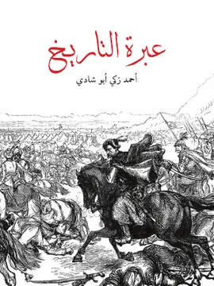

عبرة التاريخ

قراءة عربية أصلية محددة النطاق في الصفحات 11 إلى 12 من ملف PDF المرتبط، وليست تلخيصا كاملا للكتاب. نناقش ما تدعمه هذه المقاطع فقط.
نعي مصطفى نجيب في عبرة التاريخ
يبدأ المقال بقول الكاتب إنه لا أصعب ولا أقسى على نفس الأديب من أن ينعى إليه إمام من أئمة العلم وأستاذ من أساتذة الإنشاء واللغة. ويذكر أن فقيد النثر والنظم مصطفى نجيب بك ألف ثمانية مؤلفات نفيسة وكان يشتغل بغيرها، وعقد نيته على طبعها بعد سنتين، لكن القدر حل به فترك آثاره. ويقول إن مكتبته بيعت بعد وفاته فوصلت كتبه إلى أهل النبل والفضل مثل أحمد تيمور بك.
زاوية وحدود القراءة
قراءة موجزة من ص ١١ إلى ص ١٢ من أصل ٧٠ صفحة، تعرض مقالا في رثاء مصطفى نجيب وذكر مؤلفاته، لا الكتاب كاملًا.
الطبعة والقراءة
هذه النسخة من الكتاب صادرة ومتاحة مجانًا من مؤسسة هنداوي بشكل قانوني؛ حيث إن نص الكتاب يقع في نطاق الملكية العامة تبعًا لقوانين الملكية الفكرية. وبحسب ملف الناشر، تصميم الكتاب والغلاف مرخصان برخصة المشاع الإبداعي: نسب المصنف 4.0.
تنزيل PDF المجاني ↓ القراءة والمصدر الرسمي ↗